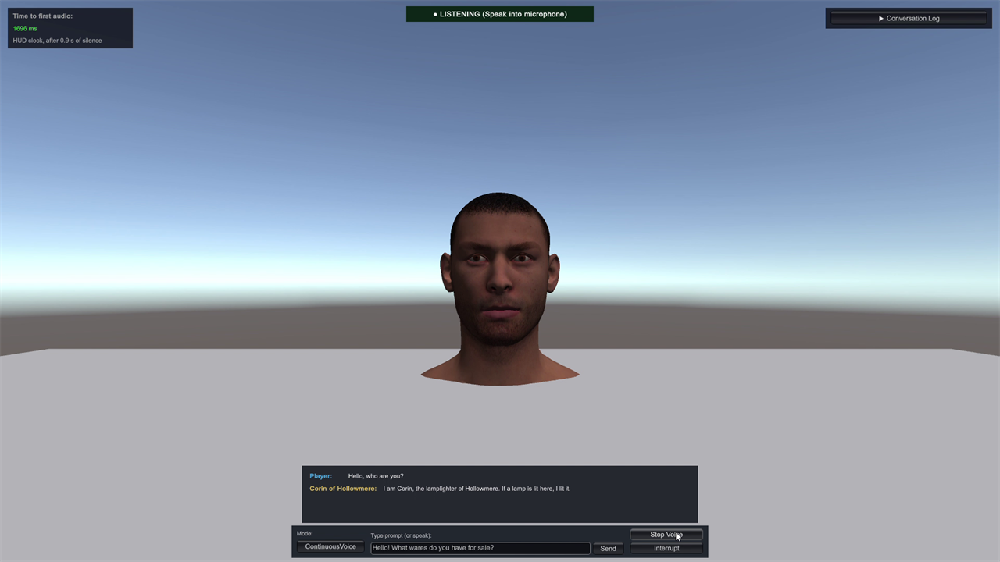
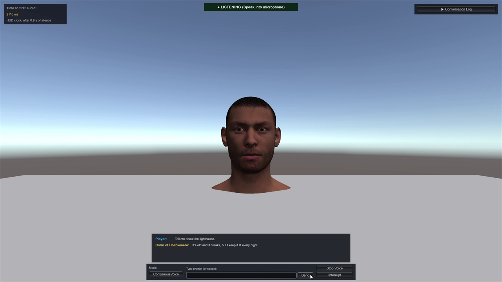

A Unity package for 64-bit Windows
LocalNPC
Voice conversations with NPCs, on the player's PC.
Players speak into their microphone and hear voiced replies from in-game characters. Everything runs on the player's PC, with no cloud service and no API fees. LocalNPC sends no data about the player: its only network use is downloading the model files from Hugging Face (huggingface.co).
Screenshots




What it is
- An NpcAgent component: add it to a character, give it a personality asset, press Play and speak.
- The language model (llama.cpp, through LlamaLib) and speech-to-text (whisper.cpp 1.9.5) run inside the game's own process, from DLLs in the package. No
.exeis started. - The NPC speaks with the Windows system voice: a OneCore voice, with SAPI 5 as the last fallback. No download and no voice model.
- Typed questions work the same way as voice.
- C# events and an async API (transcript, reply chunks, spoken sentences, state changes,
Interrupt()). - A guided Setup Wizard, a Model Manager and a Diagnostics window with per-turn timings.
- Sample scenes: QuickStart (a capsule), QuickStart Head (a sample head whose jaw opens with the loudness of the voice), Shopkeeper and an information Kiosk.
- Offline deployment: models can be bundled in StreamingAssets for kiosks and machines without internet.
How it works, in 5 lines
- The microphone signal goes through the built-in energy (loudness) voice activity detection.
- Speech-to-text (Whisper) turns what the player said into text.
- A small language model (Qwen2.5, through llama.cpp) writes the reply in the character's personality.
- Each sentence is spoken with the Windows system voice while the language model is still writing the next ones.
- The sound plays from the NPC; an optional component opens a character's jaw with the loudness of the voice.
What you need
- Unity 6000.0 or newer. Tested on Unity 6000.0.85f2, 6000.3.10f1 and 6000.6.8f1. Other Unity 6 versions are not officially tested.
- Windows 10 or 11, 64-bit only. macOS, Linux, Android, iOS and WebGL are not supported in v1.0; LocalNPC does nothing on other platforms.
- Render pipeline: the sample scenes draw in the Built-in Render Pipeline and in URP. HDRP is not supported.
- A Windows speech voice for the NPC's language on the machine that runs the game (Settings > Time & language > Speech). Without one, the NPC answers in text only.
- The Visual C++ 2015–2022 x64 Redistributable on every machine that runs the game. LocalNPC does not include Microsoft's DLLs.
- A CPU with AVX2 for normal speed. On a CPU without AVX2 a slower library is loaded instead. The models run on the CPU; the graphics card is not used in v1.0.
- Disk space for the model files: 1.20 GB for the Balanced preset (the default) or 569 MB for the Fast preset (for low-end PCs).
Models are downloaded on your click
The model files are not in the package. The Setup Wizard, the Model Manager or the sample scene's Download & Install Models button downloads them from Hugging Face (huggingface.co), over HTTPS with the server's certificate checked, and checks each file with SHA-256. LocalNPC runs no server of its own; Hugging Face sees the IP address of the computer that downloads. After the models are downloaded, LocalNPC makes no network requests (checked by reading the code; no network capture was made).
| Preset | Language model | Speech model | Download |
|---|---|---|---|
| Balanced (default) | Qwen2.5-1.5B-Instruct Q4_K_M | Whisper tiny.en | 1.20 GB |
| Fast (low-end PCs) | Qwen2.5-0.5B-Instruct Q4_K_M | Whisper tiny.en | 569 MB |
How long a reply takes
Typically about 3 seconds after you stop talking: a 0.9 second end-of-speech wait plus about 2 seconds (measured 2.04 to 2.25 s on one laptop, Balanced preset, five voice turns). It depends on your hardware, and we have not measured other machines yet.
Honest limits of v1.0
- LocalNPC has no content filter and gives no safety guarantee: replies come from small local models (Qwen2.5 0.5B and 1.5B) and can sometimes break character (for example when asked whether they are an AI), refuse in a generic assistant voice or say something you would not want, so test your personalities with the questions your players will ask.
- English speech recognition only (Whisper tiny.en); accuracy on accented speech has not been measured.
- The voice is the Windows system voice. It is not emotional: every reply is read in the same tone.
- In v1.0 only your code interrupts the NPC, by calling
Interrupt(); the player cannot interrupt it by speaking. - Push-to-talk is not connected to the microphone in v1.0; it is planned for v1.1.
- Use a headset: with loudspeakers, the NPC's own voice can reach the microphone.
- Only one
NpcAgentcan listen to the microphone at a time. - The jaw opens with the loudness of the voice. Other mouth shapes need the optional uLipSync package, which is not included.
- RAM needs have not been measured; the Editor warns under 11 GB for the Balanced preset.
The full list is under Known issues.
AI disclosure
LocalNPC is an AI-based asset.
This package runs a language model (Qwen2.5, downloaded at first use from Hugging Face) and a speech-to-text model (Whisper) on the player's PC. NPC replies are generated by the language model and are not reviewed. Parts of the package's code and documentation were written with the help of AI tools.
Licence
LocalNPC is sold on the Unity Asset Store; the standard Unity Asset Store EULA applies. Third-party components and their licences are listed in the Third-Party Notices, which ship with the package.